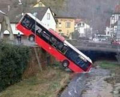
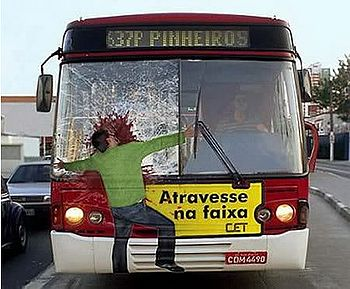

Autobús
 De: La Frikipedia, la enciclopedia extremadamente seria.
De: La Frikipedia, la enciclopedia extremadamente seria.
| De la serie medios de transporte:
|
| Autobús
|
| 
|
| Aquí podemos apreciar un autobús en su hábitat natural bebiendo agua
|
|
| Año de creación
|
2012, justo despues del fin del mundo
|
| Velocidad
|
-100 K/picosegundo
|
| Nacionalidad
|
Argentino
|
| Combustible
|
Jarabe de plomo
|
| Número de asientos
|
muchos
|
| Notas
|
IP anónima se la come (ya enserio no es cierto yo me la como más que él)
|
El autobús es un medio de transporte que utiliza el gobierno para jodernos vivos ir a cualquier zona de Valencia que pase por el trayecto del autobús en cuestión, pues
hay varios números de autobuses, por lo que cada uno joderá transportará a personas y frikis distintos.
Definición de autobús más extendida
- Los autobuses están pilotados por conductores diplomados en el arte de estecochenoesmioasiquemelapelaconducirbien. No entraremos en detalles respecto a este arte porque creo que el nombre lo dice todo.
- También son másters en la teoría de la frase señora es que el tráfico está muy mal uno hace lo que puede y especializados en quejarse para joder a un servidor y muchos otros que, por desgracia, tienen que confiar en los autobuses.
- Los autobuses son medios de transporte pilotados por seres que siempre van con los humos subidos (a excepción de cuando son novatos en el oficio), que pueden pasarse la vida llevando a gente de un lado a otro o convertirse en presidentes del gobierno tal cual, como si nada.
Tipos de conductores de autobuses
Un conductor de autobús feliz
- El pringado: Este tipo de conductor es el típico conductor que le tocan siempre los peores tipos de pasajeros(que veremos a continuación), al que se le escacharra el autobús(accidente que fomenta las acciones de, otra vez, los peores tipos de pasajeros), al que se le cruza un loco, al que se le jode la máquina de los billetes del autobús, vamos al que le ocurre de todo menos lo bueno. Estos suelen ser los que más pena dan, supongo.
- El "relajado":Es el conductor que se queja de todo y nunca está tranquilo, intentando relajarse metiendole hostias y guantazos a la máquina del billete de autobús cuando se estropea(o cuando no está roto). También se suelen relajar no abriéndole la puerta a los que llegan tarde. Cuando eres uno de esos pasajeros que no le abren la puerta y ves su cara sonriente mientras oyes un "chisss" y se va con él el exámen que tienes a primera hora piensas:-Pero menudo hijo de su santa madre panchita de tetas de flan-.
- El durmiente:Ese amable conductor que parece que esté siempre durmiéndose porque SIEMPRE, y no hay excepción, SIEMPRE SIEMPRE SIEMPRE el mismo conductor
malnacido llega tarde por cualquier asunto personal que le ronde por la cabeza.
Sin embargo, todos tienen una característica común: se creen San Pedro abriendo y cerrando las puertas del bus según les sopla el viento.
Momentos chungos en las paradas
- El momento "¡¿quéééé?!":Ocurre cuando llegas a tu parada como cualquier día normal por la mañana cuando de repente ves en el tablón de anuncios un pequeño cartelito disimulado que pone cosas como "huelga de autobuses de tal hora a tal hora, funcionarán los servicios mínimos".Casualmente, de tal hora a tal hora te afecta a tí, y casualmente los servicios mínimos no estarán y no vendrán, quizá porque le están dando al manubrio, quizá porque se han solidaridado con la huelga del plan "vamos a joder vivos a los currantes estos y de paso que nos paguen más", vaya que divertido suena, me tendré que unir, a la mierda los servicios mínimos, es de esquiroles.
- El momento "¡noooo!":Ocurre cuando llega el autobús, subes tranquilamente y te das cuenta de que tu bonobús no tiene dinero o tiene la banda magnética o el chip fastidiado. Casualmente, este es el único día del mes que no llevas suelto.
- El momento "¡mierda!":Ocurre cuando estás media hora esperando al autobús y cuando por fin llega te metes la manos en el bolsillo y... ¿qué es lo que encuentras? chan chan chaaaaan...nada, porque te has olvidado del puto bonobús.De aquí ocurren dos situaciones:
- El momento "¡MIERDA JODER!":Cuando vas a pagar un billete normal y te das cuenta de que te has olvidado también de la cartera.
- El momento "tsk vaya por dios":Cuando le pagas pero aún así vas a llegar tarde porque se ha retrasado el autobús.
Situaciones chungas en el bus
En casi todos los viajes que hagas tú en bus tendrás probabilidades de que ocurra algo de esto
- tú parada es la siguiente y no vas tarde, casualmente el autobús girara una curva y se incorporara a un atasco. Para mas coña tu podrás ver la parada desde el autobús, algún
cabrón con ganas de bronca quejica (Véase: pasajeros) empezara a gritar y a jurar creando un efecto dominó :
- tú te mosquearas
- el bebe de delante tuyo empezara a llorar como un poseso
- El conductor del bus empezara a gritar y parara el bus
- Desde los coches te miraran como si tú hubieras sido el culpable del tapón
- Le rezaras a Chuck norris para que aparte todos los vehículos y el pasara de ti
- tú ibas en el bus tranquilamente hasta que banda de mocosos adolescentes de un colegio cercano se suben al bus porque no tienen dinero para pagar un bus para 40 personas:
- el autobús se llena hasta su limite total llevándose los niños todos los asientos
- el autobús se retrasa porque cada niño tiene que pagar su billete
- el conductor se pone tan nervioso que:
A) se muta en un hulk.
B) se pokemoniza en mew y destruye todo.
Tipos de pasajeros
 Tipico pasajero de autobus antes de subir a el
Vamos a hablar un poco de los peores y los más divertidos
- El desconocido ya conocido:Esa persona que siempre se sienta en el mismo sitio y siempre te lo encuentras en el autobús donde vas tú, y quizá al sitio que vayas tú también te lo encontrarás. Puedes adivinar parte de su vida si te aburres y buscar mas desconocidos ya conocidos, abundan como los abuelos.
- La "cuerdas":Suele ser una típica señora de oficina que siempre va con una amiga suya y se ponen a chillarse su vida una a la otra y viceversa, haciendo que todos los pasajeros se enteren de su vida también. Pueden ser la leche si el trayecto es aburrido.
- El oficinista "serio":Un caso muy curioso. El típico abogado o cualquier gran trabajo que tiene su maletín de ejecutivo y que al sentarse se saca unos cascos y el mp3 y se pone música a todo volumen. Lo curioso de estos tipos es que la música que escuchan es heavy metal puro y duro con gritos y hostiones a la batería que se oyen en todo el autobús, mientras ellos mantienen su cara de persona seria de las que escucha ópera.
- El loco:Una peligrosa variante del desconocido ya conocido. Es ese tipo que te vigila durante todo el trayecto y desvía la mirada cuando le ves. Es esa persona que te mira con ganas de algo raro y a veces te habla para mantener conversación. Si te lo encuentras en todas partes, quizá no sea coincidencia, amigo.
- El grupo chungo:El típico grupillo de pijillos peleles que se pasan el trayecto hablando de pacha y de las tias. A veces van acompañados por pijillas que también hablan de pacha y de tios. A veces son unos gamberros que se dedican a hacer el gilipollas con tal de llamar la atención.
- La marabunta chunga:Este tipo de pasajeros solo aparecen los viernes por la tarde, y son una gran cantidad de chungos que se ponen la música de los móviles que son insoportables para las "abuelas "channel""
- La abuela "channel":Esa señora con 320.000 litros de perfume de eau de merdé que se sienta al lado tuyo para que te ahogues y te intoxiques de ese asqueroso perfume de abuelas. Lo peor es cuando hay dos de ellas en un mismo autobús, formando una fusión entre la abuela "channel" y la "cuerdas" mortal.
- El charlatán:Este tipo de pasajero se caracteriza por hablar siempre por el móvil y encima siempre con la misma persona. También resultan divertidos si el viaje es aburrido.
- La quejica:La señora de frases al autobusero tan célebres y características como :
-¿no puede venir más pronto?
-¿puede poner el aire acondicionado o quiere que nos asemos?
-¿ah ya está puesto?pues súbalo
-¿como que está al máximo?no me lo creo. Bueno pues bajaré alguna ventana
-¿oiga señora me puede ayudar con la ventana?
-uuf por dios cuanta gente, si viniera antes no ocurriría
-¿ya se ha equivocado?si estuviera en lo que está no le pasaría
-¿qué hora es?¿llego tarde verdad?esque esto está muy mal
-¿cómo?¿que me baje?¿por qué?ya se lo diré yo a reclamaciones ya.
Casos prácticos
Ahora pondremos en práctica mediante un ejemplo lo explicado arriba:
- Llegas a la parada y te encuentras el bonito cartel de huelga, así que esperas unas 2 horas hasta que viene servicios mínimos(el tiempo que tarda en darle al manubrio) cuando te llevas la mano al bolsillo y no hay bonobus, te llevas la mano al otro bolsillo y no hay cartera, ale, a correr a casa y a la espera de 2 horas más.
- Cuando llega te da mala espina el tío que te observa en la parada y sube contigo. Mientras, el conductor le está zurrando y gritando a la máquina de los bonobuses porque se ha estropeado. Picas manualmente y te sientas, como siempre, al lado de la "cuerdas".
- Siguiente parada, la abuela "channel" entra en el autobús y se pone al lado del oficinista "serio" que está escuchando AC/DC. Mientras, la quejica empieza el día con un minimonólogo sobre la tardanza del autobús y de la huelga.
- Siguiente parada, la pesadilla: la marabunta chunga. La abuela "channel" se queja y se baja porque no les puede soportar. A la quejica la han echado hace tiempo.
- Siguiente parada, entra un grupo chungo y se pelean con la marabunta chunga por una cosa que ocurrió en el pacha que no se olvida o algo así.
- Los echan del autobús, y el conductor sigue metiéndole guantazos a la máquina de los bonobuses, que se ha roto más.
- Siguiente parada, entra el charlatán pero por suerte tuya, tú ya te bajas.
- Bueno, esto ha sido una pequeña guía para que no te cojan desprevenidos los autobuses.
- ¡Ah! si eres nuevo, para parase le das al botón ese grande y rojo que pone "stop".
Véase también
 Transporte Transporte 
|
|
|
Autor(es):
- Frikiman
- Guilfer
- Azulejos
- El Sevillano
- Argan
- Pan con challa
- Borrador5
- Dark temptation
- Oliporros
- 62666
Frikipedia 2005-2016, Licencia
GFDL 1.2 - Extraído por FrikiLeaks